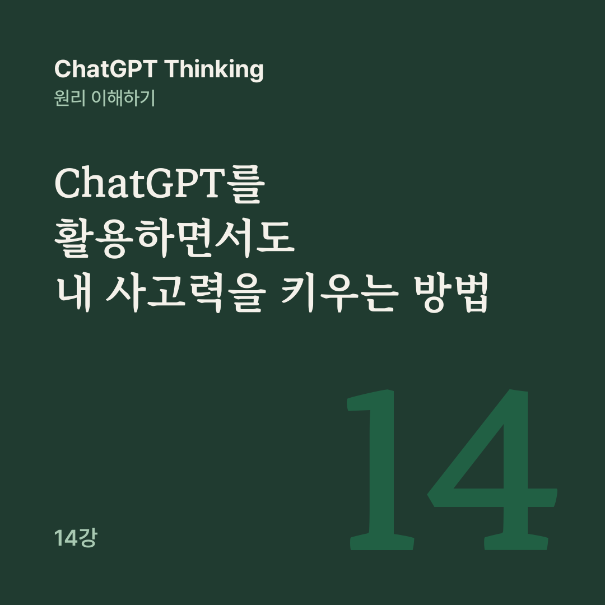

AI 원리 노트 · ChatGPT Thinking 14강
시간을 아끼는 일은 AI에 맡기되, 내 사고력과 전문성을 키우는 데 필요한 생각까지 모두 맡기지는 말자.
13강에서는 AI의 자율성이 높아질수록 사람의 역할이 어떻게 달라질 수 있는지 살펴봤습니다. 이번에는 한 사람의 자리에서 묻습니다.
AI가 내 대신 글을 쓰고 문제를 풀고 계획을 세워 준다면, 나는 점점 더 유능해질까요, 아니면 AI 없이는 생각하기 어려워질까요? 답은 AI를 어떻게 쓰느냐에 따라 달라질 수 있습니다.
어떤 사람이 AI로 훌륭한 사업 보고서를 썼다고 해 봅시다. 시장 조사, 수익 예상, 실행 계획까지 완벽하게 정리되어 있습니다. 그런데 누군가 이렇게 묻습니다.
왜 이 전략이 다른 전략보다 좋은가요?
AI의 답변을 다시 열지 않고는 설명할 수 없다면, 결과물은 훌륭할 수 있어도 그 사람이 문제를 충분히 이해했다고 보기는 어렵습니다. 결과물을 만드는 능력과 스스로 이해하는 능력은 서로 도움이 될 수 있지만, 자동으로 함께 늘지는 않습니다.
2025년에 발표된 두 연구를 보면 중요한 차이를 발견할 수 있습니다.
지식 근로자 319명을 조사한 Microsoft 연구에서는 AI에 대한 신뢰가 높을수록 비판적 사고에 들이는 노력이 적다고 보고하는 경향이 나타났습니다. 설문 연구라서 이 결과만으로 AI가 사고력을 직접 떨어뜨렸다고 단정할 수는 없습니다.
고등학생을 대상으로 한 수학 학습 실험에서는 일반적인 AI 도우미에 의존해 연습한 학생들이 AI 없이 본 시험에서 대조군보다 성적이 낮았습니다. 정답 대신 교사가 설계한 힌트를 주는 AI를 쓴 경우에는 그 부정적 효과가 상당 부분 완화되었습니다.
AI가 학습을 늘 방해하지는 않습니다. 2026년에 발표된 한 무작위 실험에서는 AI를 활용한 학습이 이후 AI 없이 치른 지식 평가에서도 긍정적인 효과를 보였습니다. 특히 글 작성 자체를 맡기는 방식보다 개념 설명을 얻는 방식이 지속적인 학습 이점과 연결되었습니다.
지금까지의 연구는 AI를 쓰느냐 마느냐보다 쓰는 동안 내가 어떤 사고 활동을 하느냐가 중요하다고 시사합니다.
강의는 AI를 쓰는 방식을 셋으로 나눕니다. 이메일 번역처럼 빠르고 정확한 결과물을 얻는 ‘대행 모드’, 내 계획의 약점과 대안을 함께 찾는 ‘협업 모드’, AI 없이도 해낼 능력을 기르는 ‘훈련 모드’입니다. 훈련 모드의 요청은 이렇습니다.
답을 먼저 말하지 말고 내가 직접 해결하도록 힌트를 줘.
이미 잘 아는 반복 작업은 대행 모드로 빠르게 처리해 시간을 아끼고, 그 시간을 더 중요한 학습이나 판단에 쓰는 것도 좋은 전략입니다. 다만 새로운 능력을 배우려는 순간까지 모든 사고를 AI에 맡기면 학습 기회를 놓칠 수 있습니다.
계산기를 잘 써도 기본 계산 원리는 알아야 하듯, AI가 보고서를 잘 써 주더라도 핵심 결론을 설명하고 근거를 평가하는 능력은 필요합니다.
작은 온라인 쇼핑몰에 고객 불만이 늘자 AI가 이런 전략을 제안했습니다. 강의가 든 가상 사례입니다.
고객 불만을 줄이기 위해 불만을 접수한 모든 고객에게 5,000원 할인 쿠폰을 지급하세요.
좋아 보일 수 있지만, 바로 실행해도 괜찮을까요? 강의는 AI의 평가를 보기 전에 판단 이유와 먼저 확인할 정보를 직접 적어 보라고 권합니다. 내 관점과 가정을 먼저 만들어 두면, AI의 결론을 무의식적으로 받아들이는 대신 내 판단과 비교할 기준이 생깁니다.
학습이나 중요한 판단에서는 다음 순서를 연습해 볼 수 있습니다. 먼저 내가 아는 것과 가설, 모르는 것을 정리합니다. AI에게는 설명과 대안, 반례, 필요한 근거를 요청하고, AI와 내 의견이 다른 이유를 확인합니다.
그다음 답변을 보지 않고 내 말로 다시 설명하고, AI 없이 새로운 문제에 적용해 봅니다.
이 마지막 단계가 특히 중요합니다. AI를 활용한 결과물의 품질뿐 아니라 내 실제 능력까지 확인할 수 있기 때문입니다.
전문성은 지식을 많이 외우는 것만이 아닙니다. 무엇이 핵심인지 알아보고, 근거와 판단 기준을 고르고, 예외적인 상황에 대응하는 능력도 포함됩니다.
AI가 매끄러운 주식 투자 분석 보고서를 만들어도, 그것을 평가하려면 주가, 이익, 현금흐름, 위험 같은 개념과 어떤 전제가 잘못되면 결론이 달라지는지를 이해해야 합니다. 그래서 ‘이 업계의 분석 보고서를 만들어 줘’ 대신 이렇게 요청해 볼 수 있습니다.
이 업계를 분석할 때 전문가가 먼저 확인하는 핵심 지표 5가지를 가르쳐 줘.
같은 요청에 ‘내가 각 지표를 해석해 보면 오류와 빠뜨린 가정을 피드백해 줘’라고 덧붙입니다. 이 요청에서 AI는 내가 전문가처럼 판단하는 법을 익히도록 돕습니다.
이해하지 못한 용어나 가정은 따로 배우는 것이 좋습니다. 7강의 Know Your Unknowns와 이어지는 대목입니다. 모르는 사실을 찾는 데서 나아가, 무엇을 알아야 올바르게 판단할 수 있는지 배우는 일입니다.
AI가 12강에서 다룬 ‘데이터 드리프트’를 아주 쉽게 설명해 주면 읽는 동안에는 충분히 이해한 것 같습니다. 그런데 다음 날 AI 없이 누군가에게 설명하려 하면 막힐 수도 있습니다. 이해한 느낌과 혼자 문제를 해결하는 능력을 혼동하는 것은 학습에서 가장 조심할 점 가운데 하나입니다.
그래서 자료를 보지 않고 배운 내용을 기억에서 꺼내 보는 인출 연습(Retrieval Practice)이 중요합니다. ChatGPT의 공부 모드(Study Mode)는 답을 바로 제시하기보다 질문과 힌트를 주고 이해도를 확인하는 방식으로 학습을 돕도록 설계되었습니다.
다만 공부 모드가 늘 그렇게 동작하지는 않으니 필요하면 ‘정답을 먼저 알려주지 마’라고 요청할 수 있습니다. 공부 모드가 없어도 일반 대화에서 같은 부탁을 할 수 있습니다.
AI 시대의 핵심 역량은 단순히 AI로 좋은 답을 만드는 것이 아닙니다.
AI가 나 대신 얼마나 잘하는지보다, AI와 함께 일하면서 내가 무엇을 더 잘하게 되었는지가 중요합니다. 1강의 질문은 ‘ChatGPT는 어떻게 생각할까?’였고, 14강에서는 ‘ChatGPT와 함께 일하면서 나는 어떻게 더 잘 생각할 수 있을까?’라는 질문까지 왔습니다.
다음 15강에서는 AI 시대에 증거를 바탕으로 판단하고 불확실성을 다루는 법을 살펴봅니다.
공개 대화의 14강을 블로그용으로 다시 편집했습니다. 원문 강의가 참고한 글은 아래 네 편입니다.
